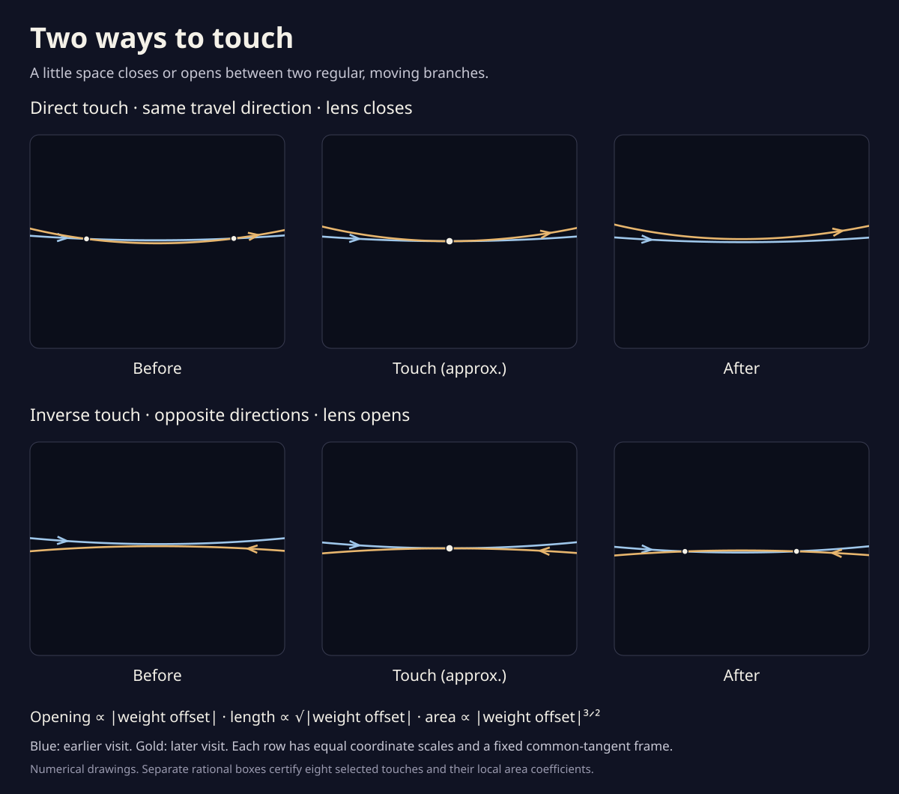

Two ways to touch
A little lens lies between two crossings. Move the drawing towards a touch: the lens narrows, its ends meet, and the crossings disappear. Both branches keep moving. Sometimes they travel together; sometimes they face each other.
A small neighborhood of one touch on the blend from rhythms 11 / 6 to 11 / 8. The center uses rounded event coordinates. Nothing animates.
Two crossings enclose a little lens.
The small gap makes the lens
The opening is easier to see when we subtract one branch from the other. A zero means that they meet; the shaded area between the two zeros equals the lens area. Here the vertical scale is enlarged. The dashed reference holds the drawing at its touch.
- Lens area · drawing units²
- Area / |weight offset|3/2
- Limiting coefficient
- —

Why a three-halves power?
Near an ordinary touch, the separation is a nonzero multiple of the weight change plus a quadratic bend along the tangent. The opening is proportional to the weight offset; the distance between crossings is proportional to its square root. Integrating their parabolic gap gives an area proportional to |weight offset|3/2.
The coefficient above is enclosed separately by rational arithmetic. The changing area is numerical, and its ratio approaches that coefficient as the lens shrinks. This is a limiting law; the displayed finite lenses do not obey it exactly. Read the calculation and its scope ↗
What does the direction change?
A touch with matching travel directions is called direct. Opposing directions give an inverse touch. Either creates or destroys two crossings locally; strangeness stays fixed. Two other integers, J⁺ and J⁻, tell these touches apart: a direct touch changes J⁺, while an inverse touch changes J⁻.
Each selected touch has a reflected partner at the same weight. The four reflected pairs were certified individually. Their nearby drawings have 40 → 36 → 40 → 36 → 40 crossings and strangeness eleven, at the specified sampled weights. This study does not certify a complete event census between those weights. Follow the winding-number calculation ↗
What has been proved?
Eight rational contraction boxes each contain exactly one selected tangent meeting. Nonzero relative curvature and nonzero separation speed prove each touch is ordinary, determine which side has the small lens, and enclose its area coefficient. A separate whole-orbit cover excludes other branches from a small disk around each contact throughout the controls. The point keeps moving on the whole route, with speed at least 775 drawing units per radian.
A second certificate covers four complete short windows, each centered on a touch with weight radius 0.00001. Each contains exactly its reflected pair of ordinary tangencies and no other event. These windows are narrower than the slider neighborhoods; the full blend remains a separate question. The drawings use rounded coordinates. Reproduce the continuous-window proofs ↗